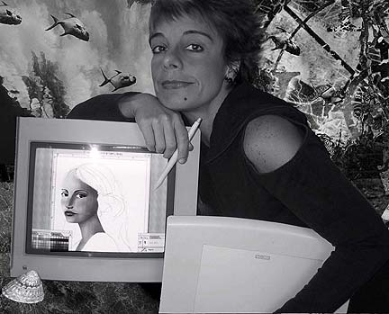

Ileana Frómeta Grillo
DIGITAL COLLAGE
Ileana in her studio

A review of Ileana Frómeta Grillo's art
by JD Jarvis
MOCA contributing editor
Ileana in her studio

A review of Ileana Frómeta Grillo's art
by JD Jarvis
MOCA contributing editor
Ileana Frómeta Grillo's figures are made up of sharp, precise lines and flat shapes, which describe expressive volumes. She shades these volumes with colorful light and sets up a vibration between flat and 3D space that gives her figures real life. Comparisons to Modigliani and Rivera are possible, but lacking the studied distortion of the former and the chunky immobility of the later; I must say her illustrations are fresh and original. And, while Gauguin's women are often engaged in some activity of daily life, Ileana's women are placid and almost seem to be dreaming. Real charm is added by juxtaposing highly rendered details of hands and feet with mostly flat shapes that represent clothing. In this way, her highly illustrative work retains a palpable liveliness. Her skill in achieving these figures proves the artist's ability to manipulate the natural media software of "Painter" to achieve the look of high quality renderings done with traditional media.What makes her work really interesting, from a "digital" point-of-view, is her use of collage to marry these figures into the elegant backgrounds. The term "collage" in this case refers more to the technique she employs and not the results, since none of these works appear to be what we think of as "collage". Normally we see photographs or bits of textured and colored papers combined into 2D compositions. With her process, Ileana seamlessly integrates her figures from Painter into opulent suggestions of sky, surf, foliage and interior textures. "Photoshop" is, of course the tool of choice here and she uses it well. Photos are altered, just enough to complement and support the character of her figures. These backgrounds are not abstractions, but rather refinements; graphic representations of photographic elements that have been texturized, tinted and, using Photoshop's layer mixing modes, integrated into a cohesive whole. Suggesting photos, but read as if they were hand drawn elements. In this way, the whole surface of her work vibrates with 3D and 2D interplay.
This is not ordinary "cut and paste" and goes to demonstrate the power i tools and multiple software being used in this fashion. Using each tool to its strength, Ileana is not afraid to recycle and re-use elements from one piece in another work. Her adept combination of scans, altered photos, careful choice of filters and sensitive hand drawn elements creates work that goes beyond what could be produced with any other media. She is using her tools well and exploiting all the advantages that digital art making offers.